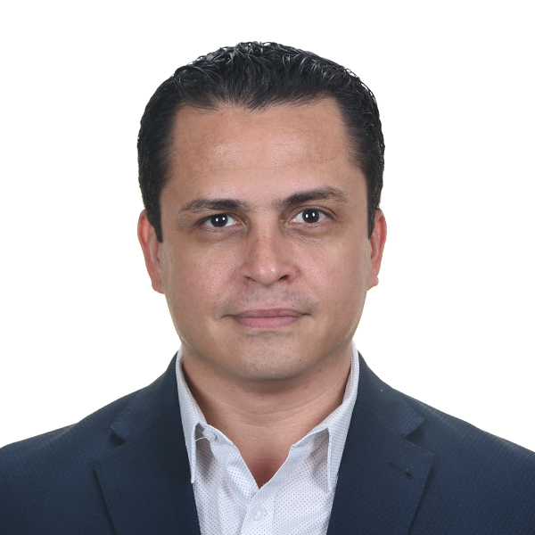

Renato Vargas
Economist | Researcher | Technical Writer | Speaker
Two decades of experience researching, writing, and speaking about the link between economics, environmental sustainability and social issues. With a demonstrated history of helping Task Team Leaders and Project Managers from organizations, such as The World Bank, the United Nations Economic Commission for Latin America and the Caribbean, and the Inter-American Development Bank, create data-backed and science-based top quality economic research to persuade clients, disseminate ideas among stakeholders, back institutional goals, and provide support for public and private policies.

I am available as a consultant on a Short Term (STC), Extended Term (ETC), Lump Sum (LS), or Services Rendered contractual basis to conduct Environmental Accounts (SEEA) Implementation and Assesments (including the Bioeconomy); Household Survey Analysis and Poverty Impact Analysis of Climate Change; General Equilibrium Modeling; Environmentally-Extended Input-Output Modeling; Ecosystem Service and Land Use Change Modeling; Data Management and Data Analysis; Policy Advise; Technical writing; Training and Dissemination.
Contact information:
- E-mail: renovargas [at] gmail [dot] com
- LinkedIn: https://www.linkedin.com/in/revargas/
- Website: renatovargas.com
Specialized training
- The GTAP Short Course in Global Trade Analysis: Theory and Applications of Computable General Equilibrium Analysis with the GTAP Model. Global Trade Analysis Project (GTAP), Purdue University. Indiana, United States. June - August, 2024.
- Computable General Equilibrium Modeling with an emphasis on natural capital using the Integrated Economic-Environmental Modeling (IEEM) Framework. Inter-American Development Bank. Washington, D.C. Year 2022.
- General Equilibrium Modeling with the PEP family of models in GAMS. Partnership for Economic Policy (PEP), Université Laval. Quebec, Nairobi, Manila. Year 2016.
- Training of Trainers for the worldwide implementation of the System of Environmental Economic Accounting 2012 - Central Framework. United Nations; BMZ; & GIZ. UN Secretariat, New York. Year 2014.
- Quantitative Methods for Evaluating Public Policy in Stata and GAMS. Center for Distributive and Labor Studies, La Plata University. Argentina & Guatemala City. Year 2009.
Education
- Research Master in Economics and Business University of Groningen. The Netherlands. June, 2012.
- Bachelor of Economics. Universidad de San Carlos. Guatemala. March, 2009.
Professional Experience
Consultant on Macroeconomic Data Management, Economic Commission for Latin America and The Caribbean (ECLAC), Santiago. September 2025.
- Trained government analysts from the Central Bank of Chile and the Ministry of Culture, Arts and Heritage in Macroeconomic Data Management Techniques for Satellite Accounting using R and Positron.
Consultant on Environmental Vulnerability Poverty Analysis, The World Bank, Washington, D.C. / Georgia. July 2024-June 2025.
- Conducted Household Survey Analysis with R and Stata to study the impacts of proposed energy transition policies on welfare and poverty for Georgia’s Country Climate Development Report—CCDR—(In preparation).
Consultant on Environmental Data Guidelines, United Nations Environment Programme, Nairobi, Kenya. November 2024-April 2025.
- Develop a Statistical guideline to support countries to calculate SDG indicator 17.7.1 “Total amount of funding for developing countries to promote the development, transfer, dissemination and diffusion of environmentally sound technologies”, which is under UNEP custodianship.
Consultant on Environmental Data Management, Food and Agriculture Organization of the United Nations, Rome, Italy. October 2024-January 2025.
- Constructed an International Emissions Database for the Agrifood Economics and Policy Division’s Monitoring and Analysing Food and Agricultural Policies (MAFAP) section.
Consultant on Bioeconomic Accounting for Ecuador, United Nations Economic Commission for Latin America and The Caribbean, Santiago, Chile. September 2024-December 2024.
- Developed a Bioeconomy Satellite Account for the Central Bank of Ecuador.
- Trained a group from the Central Bank of Ecuador and other government institutions on Macroeconomic Data Management methodologies for the creation of Satellite Accounts.
Consultant on Environmental Vulnerability Poverty Analysis, The World Bank, Washington, D.C. / Armenia. August 2023-June 2024.
- Conducted Household Survey Analysis with R and Stata to study the impacts of proposed energy transition policies on welfare and poverty for Armenia’s Country Climate Development Report (CCDR).
Advisor on the development of macroeconomic indicators for the Bioeconomy, National Administrative Department of Statistics; Alexander von Humboldt Biological Resources Research Institute; & Ecosimple, Bogotá, Colombia. November 2023.
- Senior advisor to the development of macroeconomic indicators for Bioeconomic Satellite Account in Colombia using principles of the System of Environmental and Economic Accounts (SEEA).
- Speaker on the topic at policy event in Bogotá.
Consultant on the Financial Risks of Climate Change for Corporations, German Agency for International Cooperation (GIZ). November 2023.
- Developed a framework for the analysis of Financial Exposure to Climate Change Risks for corporations in relevant industries using National Accounts and TNFD guidance.
- Conducted Geographic Information System’s Analysis of Infrastructure Risk Exposure to Climate Change for pilot implementation in Guatemala.
Consultant on Energy Policy Analysis The World Bank, Washington, D.C. / Azerbaijan. February 2023.
- Analyzed impacts of proposed policies on employment and poverty for Azerbaijan’s Country Climate Development Report (CCDR).
Consultant on Environmental and Economic Accounts, United Nations Economic Commission for Latin America and The Caribbean, Santiago, Chile. October 2022 to December 2022.
- Developed a Data Management Framework in R to Estimate Bioeconomy Satellite Accounts for 13 Latin American countries, using the Supply and Use Tables repository of ECLAC and principles of SNA and SEEA.
- Published Bioeconomy Satellite Account estimates for 13 Latin American countries.
Environmental and Economic Accounts Consultant, Universidad Rafael Landívar, Guatemala. January 2022 to November 2022.
- Developed a Data Management Framework in R and Database for Guatemala’s System of National Accounts 2013-2020.
- Developed a Framework in the R programming language to Estimate Energy Accounts for the System of Environmental and Economic Accounts of Guatemala.
Consultant on Environmental and Economic Accounts The World Bank, Kyrgyz Republic Country Office, Bishkek. January 2022 to June 2022.
- Development of environmental analysis statistical framework for the National Statistical Committee of the Kyrgyz Republic
- Authored inputs for Poverty and Vulnerability in the Kyrgyz Republic: Assessing Trends, Drivers, and Challenges.
- On-site Training to Statistical Staff of the National Statistical Committee on National Accounts, Environmental Accounts (SEEA), and Input-Output analytical methodologies in the Kyrgyz Republic.
Consultant on Risk Assessment and Disaster Impacts, Inter-American Development Bank, Washington, D.C. May 2021
- Contributed to people’s resilience chapter of Hurricanes Eta and Iota impact evaluation for Guatemala.
Consultant on Environmental and Economic Accounts United Nations Economic Commission for Latin America and The Caribbean, Santiago, Chile. June 2021 to October 2021.
- Developed a methodology for the estimation of the Bioeconomy Satellite Account, using principles of the System of Environmental and Economic Accounts (SEEA).
- Piloted and published the Bioeconomy Satellite Account of Costa Rica.
Consultant on Environmentally Extended Input-Output Analysis in Fiji, The World Bank, Washington, D.C. March-June 2021.
- Environmentally Extended Input-Output Framework for Fiji’s Tourism Sector.
- Policy analysis for the tourism sector in Fiji.
Consultant on Environmental and Economic Accounts, Inter-American Development Bank, Washington, D.C. March 2020 to December 2020.
- Co-author: Integrating the Value of Natural Capital in Evidence-based Policy Making and other inputs to the Review on the Economics of Biodiversity (Dasgupta Report).
- Co-created a public data repository for implementation of ecosystem service analysis using the InVEST set of tools for 21 Latin American countries.
Consultant on Input-Output Analysis of the Links Between The Economy and Waste in Egypt, The World Bank, Washington, D.C. October-December 2020.
- Environmentally extended Input-Output Analysis for the Waste Sector in Egypt.
Consultant on Environmental Accounts in the Kyrgyz Republic, The World Bank, Washington, D.C. May 2020.
- Co-author: Forest Accounts of the Kyrgyz Republic.
- Co-author: Feasibility of Measuring Tourism Sustainability in the Kyrgyz Republic A Technical Report.
Consultant on Environmental and Economic Accounts, Inter-American Development Bank, Washington, D.C. October 2019 to December 2019.
- Co-author: Global socio-economic impacts of changes in natural capital and ecosystem services: State of play and new modeling approaches.
- Co-author: Gross domestic product alone provides misleading policy guidance for post-conflict land use trajectories in Colombia.
Senior Monitoring and Evaluation Specialist, Feed the Future Guatemala Innovative Solutions for Agricultural Value Chains Project / Agropecuaria Popoyán. March 2018 to November 2019
- Directed and completed the move from paper to a fully digital indicator tracking ecosystem.
- Spearheaded development of AgriControl, a field monitoring mobile application that helps over 40 agricultural technicians keep track of their interventions with smallholder farmers, while collecting over 40 data points on technology adoption per farmer, farmer sales, and trainings, which feed into 12 Feed The Future indicators.
- Spearheaded development of NutriControl, a household monitoring mobile application that helps 15 diverse diet nutrition and quality of life technicians keep track of their interventions with project families, while collecting over 80 data points on adoption of behavior change practices, migration, child health, dwelling improvements, and trainings that feed into 8 Feed The Future indicators.
- Spearheaded development and adoption of AgriMEL, a web environment to track interventions with producer associations, companies, community level organizations, and forest incentives that serves as a repository of support documents, while centralizing all project information to track progress.
Monitoring and Evaluation Consultant, Feed the Future Guatemala Innovative Solutions for Agricultural Value Chains Project / Agropecuaria Popoyán. October 2017 - February 2018.
- Led strategy and development of the Monitoring, Evaluation, and Learning Plan
- Managed consultants for conceptualization and development of economic corridors, strategic alignment of stakeholders for project strategic plan, and developed subcontract with CIENSA for baseline analysis and data quality.
Senior Consultant on Agricultural Economics, Universidad del Valle de Guatemala, Guatemala City. March 2017 – October 2017
- Led agricultural development component as part of the USAID-funded Sustainable Economic Observatory program to identify national-level policy and legal gaps for agricultural development and possible solutions.
- Led participatory consultations with the Chamber of Commerce, academic sector, MAGA, USDA, USAID, IICA, and other stakeholders to identify main gaps in agricultural policies and laws inhibiting economic growth.
Consultant on the Economics of Rural Development , International Fund for Agricultural Development (IFAD), Dominican Republic. February - March 2017.
- Contributed poverty assessments for the Country Strategic Opportunities Program (COSOP) that informed IFAD lending opportunities in the Dominican Republic. Analyzed household level surveys.
Consultant on Environmental and Economic CGE Modeling and Technical Writer, Inter-American Development Bank, Washington, D.C. May 2015 - July 2016, and February – September 2017
- Provided inputs for the development of the Integrated Economic-Environmental (IEEM) CGE model.
- Co-author: several papers on Environmental and Economic Accounts CGE Modeling.
- Data management of environmental data, such as water-use by industry, deforestation, energy-use, greenhouse emissions, among others, for a model that demonstrates how economic performance affects environmental resources.
- Organized weeklong workshop at Universidad Rafael Landívar to train public sector, universities, and think tanks on how to use the model; and, Co-author: three papers on the model.
- Wrote R statistical language scripts that read information created by various researchers and institutions in different formats including Excel, Word, PDFs, catalogued it, reformatted into database configuration, and output into a format that is easy for the General Algebraic Modeling System to read for policy scenario analysis.
Consultant on the Economics of Education, Plan International, Guatemala City. October 2016 - January 2017.
- Developed conceptual framework for “Analysis of Barriers of Access to Education in Guatemala” study to validate project assumptions. Used existing raw data from national survey of living conditions for 60,000 citizens in Guatemala for USAID-funded Leer y Aprender project.
- Wrote code in STATA to process raw data into a database for education analysis named SISLEA, which was used to derive indicators, regression model variables, descriptive statistics, and graphs for the desired analysis.
- Wrote final report including data analysis, findings, and recommendations on access to formal education nationwide.
WAVES Guatemala National Coordinator, World Bank, Guatemala City. February 2014 - June 2016.
- Led The World Bank Wealth Accounting and the Valuation of Ecosystem Services (WAVES) initiative for Guatemala including managing the steering committee comprised of five public institutions.
Food Security Economics Consultant, IARNA, Rafael Landívar University, Guatemala City. October 2015 - December 2015.
- Created baseline indicator tracking system linking the national economy and food security indicators.
- Leveraged the use of R statistical language to extract information from several databases and build a macroeconomic food security database for various types of analysis and insights.
Research Economist on the Fiscal Implications of Rural Development, Central American Institute for Fiscal Studies, Guatemala City. February 2013 - February 2014.
- Led team that developed fiscal database to track government spending for rural development in Guatemala, El Salvador, Honduras, and Nicaragua. The database became a commercial data product purchased by various international institutions.
- Co-author: Desarrollo rural de Centroamérica en cifras: EL SALVADOR.
- Co-author: Desarrollo rural de Centroamérica en cifras: HONDURAS.
Consultant on the Economics of the Agricultural Sector, Inter-American Development Bank, Guatemala City. October 2012 - December 2012.
- Conducted impact evaluation on MAGA fertilizer subsidy program to increase maize and bean yields. Findings and recommendations led to the termination of the ten-year program.
- Co-wrote STATA scripts to conduct cluster analysis and econometric regression of the agricultural sector.
- Co-author: Evaluación del Programa de Fertilizantes del Ministerio de Agricultura, Ganadería y Alimentación (MAGA).
Computable General Equilibrium Consultant for the Forest Sector, Food and Agriculture Organization (FAO), Guatemala City. February 2010 - April 2010.
- Conducted impact evaluation for the National Institute of Forests (INAB) using IFPRI’s Computable General Equilibrium Model to determine price changes from over-supply of timber due to the National Forest Incentives program’s interventions and overall impact on the national economy. Recommendations led to incentivizing processing industry in the new program funded from 2016-2030.
- Developed conceptual framework and economic model to analyze data from nearly 200 indicators.
- Adapted GAMS code and formatted information from the National Institute of Forests into a Social Accounting Matrix for analysis.
Environmental and Economic Accounts Researcher, IARNA, Rafael Landívar University, Guatemala City. March 2007 - June 2010.
- Developed national indicators for the System of Environmental and Economic National Accounts ‘green accounting system’, a satellite system within BANGUAT. Indicators represent one of the first worldwide systems for quantifying the links between the economy and the use of energy.
- Suggested and implemented a database format to combine information from all researchers of the project, which has gradually been adopted in other countries as well.
- Presented the green accounting system at the United Nations and contributed to the UN London Group on environmental accounts; Won award from the UN Economic Commission for Latin America for the system.
- Author: “Energía: El motor de la sociedad”. (pp. 181-196) in Perfil Ambiental de Guatemala 2008-2009: las señales ambientales críticas y su relación con el desarrollo.
- Author: Cuenta Integrada de Energía y Emisiones (CIEE). Sistema de Contabilidad Ambiental y Económica Integrada de Guatemala.
- Author: Cuenta Integrada de Energía y Emisiones. Resultados y análisis.
- Author: Cuenta Integrada de Energía y Emisiones. Bases teóricas, conceptuales y metodológicas.
- Co-author: Cuentas de energía como instrumento para evaluar eficiencias sectoriales en la región centroamericana.
- Co-author: Sistema de Contabilidad Ambiental y Económica de Guatemala 2001-2010: compendio estadístico. SCAE 2001-2010. Tomo II.
- Co-author: Sistema de Contabilidad Ambiental y Económica Integrada (SCAEI): Síntesis de hallazgos de la relación ambiente y economía en Guatemala.
Assistant to the Environmental and Economic Accounts Pilot Implementation in Atitlán Guatemala, San Carlos University of Guatemala, Guatemala City. July 2005 - January 2007.
- Served as research liaison for environmental economics project funded by the Dutch Embassy to develop a pilot indicator system for the Atitlán watershed. Worked with municipal governments and local branches of the Ministry of Health to access data.
Publications
I have authored and co-authored many reports and peer review articles, contributing data sourcing, data management, data analysis, results narrative, original research, literature reviews, editorial content, publication quality maps, and specialized figures.
English
Onil Banerjee, Martín Cicowiez, Juan Manuel Torres-Rojo, Kenneth J. Bagstad, Renato Vargas, Bram Edens, Jacob Salcone, Elsa Marcela Begne de Larrea, Mónica Lopez-Conlon, César Rodríguez-Ortega, José Eduardo de la Torre-Bárcena, Vicente Díaz-Núñez & Francisco Guillen-Martin (2025). Integrating Quantitative Macroeconomic and Ecosystem Service Modeling Methods to Assess Conservation Programs in Mexico. Environmental and Resource Economics, 88, pp 1995-2021.
World Bank Group. (2024). Country Climate and Development Report: Armenia. CCDR Series. Washington, D.C.: World Bank.
Banerjee, O., Cicowiez, M., Vargas, R., Molina-Perez, E., Bagstad, K. J., & Malek, Ž. (2024). The economics of decarbonizing Costa Rica’s agriculture, forestry and other land uses sectors. Ecological Economics, 218, 108115.
Banerjee, O.; Cicowiez, M; Macedo, M; Malek, Z; Verburg, P; Goodwin, S; Vargas, R.; Rattis, L; Bagstad, K; Brando, P; Coe, M; Neill, C. Damiani Marti, O; & Murillo, J. A. (2022) Can we avert an Amazon Tipping Point? The Economic and Environmental Costs. Environmental Research Letters, 17(12).
Banerjee, O., Cicowiez, M., Vargas, R., Obst, C., Cala, J. R., Alvarez-Espinosa, A. C., Melo, S., Riveros, L., Romero, G., & Meneses, D. S. (2021). Gross domestic product alone provides misleading policy guidance for post-conflict land use trajectories in Colombia. Ecological Economics, 182, 106929.
Banerjee, O., Crossman, N., Vargas, R., Brander, L., Verburg, P., Cicowiez, M., Hauck, J., & McKenzie, E. (2020). Global socio-economic impacts of changes in natural capital and ecosystem services: State of play and new modeling approaches. Ecosystem Services, 46, 101202.
Dade, Drita; Castaneda, Juan-Pablo; Ismailakhunova, Saida; Fomenko, Georgy; Ysabekova, Baktygul; & Vargas, Renato (2020). Forest Accounts of the Kyrgyz Republic: Kyrgyz Republic integrated forest ecosystem management project. KR WAVES plus. The World Bank.
Dade, Drita; Castaneda, Juan-Pablo; Ismailakhunova, Saida; Markhonko, Vladimir; & Vargas, Renato (2020). Feasibility of Measuring Tourism Sustainability in the Kyrgyz Republic: A Technical Report. The World Bank.
Banerjee, O., Cicowiez, M., Horridge, M., & Vargas, R. (2019). Evaluating synergies and trade-offs in achieving the SDGs of zero hunger and clean water and sanitation: An application of the IEEM Platform to Guatemala. Ecological Economics, 161, 280–291.
Ina Porras, Essam Yassin Mohammed, Ben Milligan, Phil James, Sarah Harper, German Pochet, Renato Vargas, Eugenia Merayo, Paul Steele (2019) No hidden catch - Mainstreaming values of small-scale fisheries in national accounts. London: International Institute for Environment and Development.
Banerjee, O., Cicowiez, M., Vargas, R. et al. (2019). The SEEA-Based Integrated Economic-Environmental Modelling Framework: An Illustration with Guatemala’s Forest and Fuelwood Sector. Environmental and Resource Economics 72: 539.
Vargas, R., Cabrera, M., Cicowiez, M., Escobar, P., Hernández, V., Cabrera, J., & Guzmán, V. (2018). Climate risk and food availability in Guatemala. Environment and Development Economics, 23(5), 558-579.
Banerjee, Cicowiez, Vargas, & Horridge. (2016). The SEEA-Based Integrated Economic-Environmental Modelling Framework: An Illustration with Guatemala’s Forest and Fuelwood Sector. Conference Paper Presented at the 19th Annual Conference on Global Economic Analysis, Washington DC, USA. GTAP Resource #5075.
Banerjee, Cicowiez, Horridge & Vargas. (2016). A conceptual Framework for Integrated Environmental-Economic Modelling. The Journal of Environment and Development, 25(3), 276-305.
Vargas, R. & Dietzenbacher, E. (2015). Economies to die for: Impacts on human health embodied in production and trade. Presented at the 23rd Input-Output Conference in Mexico City. Vienna: International Input-Output Association.
Vargas, R. (n.d). Impact of demographic change on energy use in a developing country: an Input-Output approach. Working paper. Guatemala: Universidad Rafael Landívar, Instituto de Agricultura, Recursos Naturales y Ambiente.
Spanish
Vargas, R; Mondaini, A; & Rodríguez, A. (2023) Cuentas satélite de bioeconomía para 13 países de América Latina y el Caribe: metodología y resultados. Serie Recursos Naturales y Desarrollo, N° 219 (LC/TS.2023/138), Santiago: Comisión Económica para América Latina y el Caribe (CEPAL).
Vargas, R.; Alvarado, I.; Rodríguez, M.; Rodríguez, A.; Wander, P. (2022) Cuenta satélite de bioeconomía para Costa Rica: Propuesta metodológica y aplicación práctica. Santiago de Chile: Comisión Económica para América Latina y El Caribe.
Vargas, R. & Carrera (2016). Environmental and Economic Accounting Framework for Food Security. Guatemala: Institute for Research and Outreach for Environment and Society (IARNA). Rafael Landivar University (URL).
Castaneda, R., Vargas, R., Cabrera, J. (2015). Desarrollo rural de Centroamérica en cifras: EL SALVADOR. Guatemala: Instituto Centroamericano de Estudios Fiscales (ICEFI).
Castaneda, R., Vargas, R., Cabrera, J. (2015). Desarrollo rural de Centroamérica en cifras: HONDURAS. Guatemala: Instituto Centroamericano de Estudios Fiscales (ICEFI).
Castañeda, J.P, Vargas, R., Gálvez, J. Tuy, H. (2014). Cuentas de energía como instrumento para evaluar eficiencias sectoriales en la región centroamericana. Serie Estudios y Perspectivas, No. 154. México: Comisión Económica para América Latina y el Caribe (CEPAL).
Vargas, R.; Gálvez, J.; Pineda. P; Monterroso, O.; Rodríguez, C.; Melini, L.; y Ricker-Gilbert, J. (2013). Evaluación del Programa de Fertilizantes del Ministerio de Agricultura, Ganadería y Alimentación (MAGA). Guatemala: Instituto de Agricultura, Recursos Naturales y Ambiente, Universidad Rafael Landívar; Facultad de Agronomía, Universidad de San Carlos de Guatemala; Banco Interamericano de Desarrollo (BID).
Vargas, R. (2013). “Cuenta de Energía y Emisiones” en INE, Banguat y IARNA-URL (Instituto Nacional de Estadística, Banco de Guatemala e Instituto de Agricultura, Recursos Naturales y Ambiente de la Universidad Rafael Landívar). (2013). Sistema de Contabilidad Ambiental y Económica de Guatemala 2001-2010: compendio estadístico. SCAE 2001-2010. Tomo II. Guatemala: Instituto Nacional de Estadística.
BANGUAT y IARNA-URL (Banco de Guatemala e Instituto de Agricultura, Recursos Naturales y Ambiente de la Universidad Rafael Landívar). (2011). Sistema de Contabilidad Ambiental y Económica Integrada (SCAEI): Síntesis de hallazgos de la relación ambiente y economía en Guatemala. 2a. Edición. Guatemala: Universidad Rafael Landívar.
Vargas, R. (2009) “Energía: El motor de la sociedad”. (pp. 181-196) in URL, IARNA. (2009). Perfil Ambiental de Guatemala 2008-2009: las señales ambientales críticas y su relación con el desarrollo. Guatemala: Universidad Rafael Landívar, Instituto de Agricultura, Recursos Naturales y Ambiente.
BANGUAT y URL, IARNA. (2009). Cuenta Integrada de Energía y Emisiones (CIEE). Sistema de Contabilidad Ambiental y Económica Integrada de Guatemala. Serie divulgativa, No. 6. Guatemala: Banco de Guatemala y Universidad Rafael Landívar.
BANGUAT y URL, IARNA (Banco de Guatemala y Universidad Rafael Landívar, Instituto de Agricultura, Recursos Naturales y Ambiente). (2009). Cuenta Integrada de Energía y Emisiones. Resultados y análisis. Guatemala: Author.
BANGUAT y URL, IARNA (Banco de Guatemala y Universidad Rafael Landívar, Instituto de Agricultura, Recursos Naturales y Ambiente (2009). Cuenta Integrada de Energía y Emisiones. Bases teóricas, conceptuales y metodológicas. Guatemala: Author.